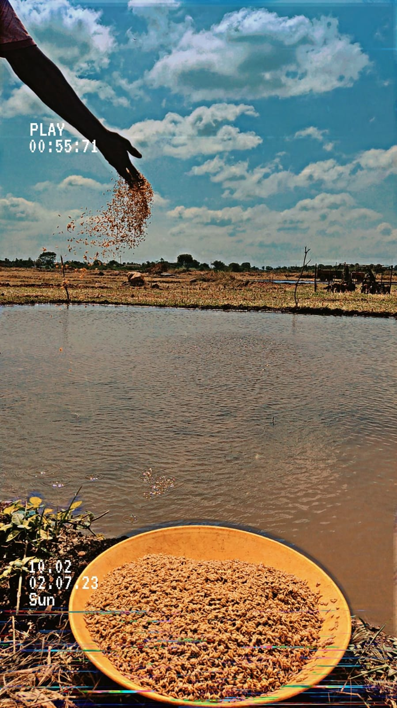

<div style="text-align:center; margin-top: 20px;">

</div>
<div style="text-align:center; margin-top: 20px;"> 
<a style="font-size:20px; padding-right: 20px;" href="Index.html">Home</a>
<a style="font-size:20px;padding-right: 20px;" href="about.html">About</a>
</div>

<h1 style="font-size:50px; text-align:center; ">Agriculture</h1>
<p style="font-size:20px;text-align:center; line-height: 32px;margin-bottom: 20px;">Agriculture means the cultivation of crops for food and fodder.</p>


<div style="text-align:center;"><a style="font-size:20px;background-color: green; padding: 10px 25px 10px 25px;color: white;" href="https://www.google.com/ ">Read more</a></div>


<h1 style="font-size:50px; text-align:center; ">Farming</h1>
<div style="text-align:center; >
  
  



</div>

